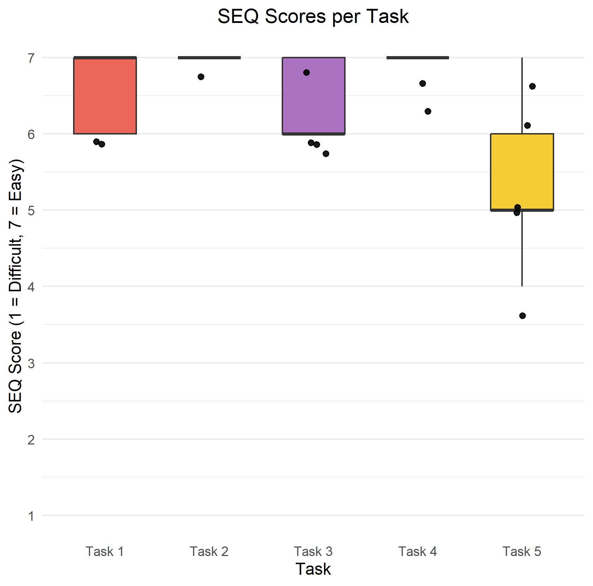
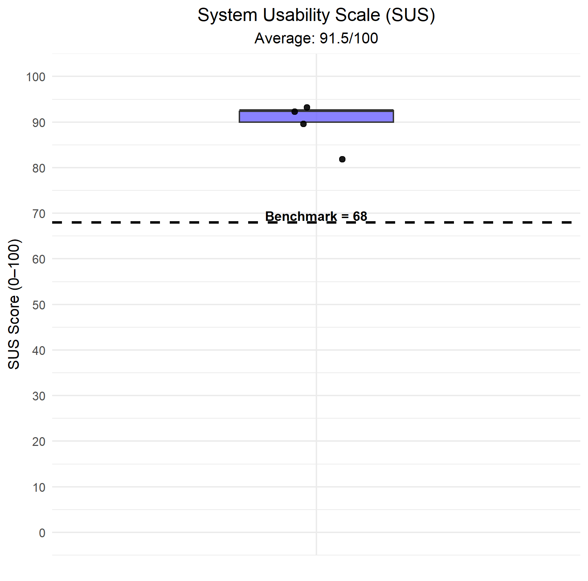

MyBuddy is a 4-in-1 wellbeing tracking app featuring a virtual companion called Buddy.
Users can track their mood, habits, sleep, and water intake while Buddy reacts to their
overall wellbeing through expressions and animations.
The app calculates a hidden Wellbeing Score (0-100) based on all tracked data,
which determines Buddy's mood. This creates a meaningful connection between tracking
activities and provides motivation through positive reinforcement and emotional engagement.
Goals & Features
Mood tracking with 8 emotional states and optional notes
Habit creation and streak tracking (CRUD functionality)
Sleep logging with duration and quality ratings
Water intake tracking with customizable daily goals
Animated Buddy companion that reacts to Wellbeing Score
Full customization: Buddy name and color via color wheel
Daily motivational quotes via external API(ZenQuotes)
Shows habit list with streak grids, completion status, and “Create New Habit” button
AddHabitScreen
Create habits with name, description, and color selection
EditHabitScreen
Edit or delete existing habits
HealthScreen
Tab-based view with Sleep and Water sections
AddSleepScreen
Log bedtime, wake time, and sleep quality (Terrible/Okay/Awesome)
AddWaterScreen
Quick-add water intake with slider and customizable daily goal
ProfileScreen
Shows Buddy preview, statistics cards, and “Customize” button
CustomizeBuddyScreen
Color wheel picker and name editor for Buddy personalization
Components
api
QuoteBubble.kt – UI bubble for quote display
QuoteSection.kt – quote container + layout
habit
HabitCard.kt – habit list item with streak/check-in
HabitsStreakGrid.kt – streak grid visualization
StatCard.kt – small stats cards
healthsleep
SleepClockRing.kt – sleep visualization ring
SleepInfoCard.kt – bedtime/wakeup info card
SleepQuality.kt – sleep quality model/enum
SleepQualityCard.kt – UI card for quality display
SleepWeeklyBar.kt – weekly sleep bar chart
WeeklySleepStats.kt – weekly stats wrapper
tabs
HealthTab.kt – tab content wrapper
HealthTabPill.kt – tab pill UI
HealthTabs.kt – tab navigation row
water
AddWaterButton.kt – quick add button
AddWaterDialog.kt – dialog for adding water
WaterProgressRing.kt – progress visualization ring
WeeklyCircle.kt – weekly indicator circle
WeeklyWaterStats.kt – weekly stats wrapper
home
HabitsStatCard.kt – habits widget for Home screen
MoodStatCard.kt – mood widget for Home screen
SleepStatCard.kt – sleep widget for Home screen
WaterStatCard.kt – water widget for Home screen
mood
EditMoodItem.kt – mood list/detail row item
MoodStatCard.kt – mood stats card component
MoodStatsRow.kt – stats row wrapper
profile
ColorWheelPicker.kt – buddy color picker
ProfileStatCard.kt – profile stat card
SettingsRow.kt – row for settings items
SleepGoalDialog.kt – edit sleep goal dialog
WaterGoalDialog.kt – edit water goal dialog
shared
BlobMood.kt – mood mapping for Buddy blob
BottomBar.kt – bottom navigation bar
BuddyBlob.kt – animated Buddy component
GradientButton.kt – reusable gradient button
MoodType.kt – mood type mapping
Utils
WellbeingCalculator
Calculates Wellbeing Score (0-100) from mood, habits, sleep, and water data
SleepQualityColor
maps sleep quality states to theme colors (Awesome/Okay/Terrible → color)
DateUtil
Helper functions for date formatting and comparisons
ColorUtil
Generates gradient shades from selected color
Wellbeing Score
The Wellbeing Score (0-100) combines four wellbeing dimensions.
The score is calculated internally and reflected through Buddy's mood -
users never see the number directly, only Buddy's expression.
We will analyze the current version (19.01.2026) of our App MyBuddy to find potential problems which we can work on in the coming week, based on Nielsen's 10 Usability Heuristics.
10 Usability Heuristics
Visibility of System Status
Match Between System and the Real World
User Control and Freedom
Consistency and Standards
Error Prevention
Recognition Rather Than Recall
Flexibility and Efficiency of Use
Aesthetic and Minimalist Design
Help Users Recognize, Diagnose, and Recover from Errors
Help and Documentation
Evaluation Results
Screen
Heuristic
Problem
Severity
Fix
Home
1. Visibility of System Status
User can't see why the Buddy has a certain animation (Wellbeing Score is hidden)
High
Fixed
Add Mood Screen
9. Help Users Recognize, Diagnose and Recover from Errors
If a user tried to add a mood without selecting a mood first the screen doesn't do anything instead of printing an error message
Medium
Fixed
App
10. Help and Documentation
There is no description about what the app is used for which could potentially confuse people who download the app out of curiosity without having ever used a wellbeing app.
Medium
Fixed
Mood
3. User Control & Freedom
No "Undo" when user by mistake deletes a mood
Medium
Future
Health Sleep
2. Between System and the Real World
12 Hour Clock but no AM/PM clock display
Low
Future
Profile Customize
3. User Control & Freedom
No "Reset" button for Buddy Customization
Low
Future
Health Screen (both tabs)
3. User Control and Freedom
No way to switch between weeks in weekly statistics, can only see current week
Low
Future
Profile
2. Match between System and Real World
Some terms maybe need to be explained to the user (e.g. "streak", "perfect day")
Low
Future
Home
10. Help and Documentation
Explanation for scores would be very useful (wellbeing, streaks)
Low
Future
Usability Test Plan
The goal of this usability test is to evaluate the overall usability and user experience of our MyBuddy app.
We want to identify any confusing areas in the interaction flow - particularly around logging wellbeing information - so we can improve clarity, navigation, and user experience.
Specifically, we will answer the following key questions:
How intuitive is it for users to log their daily wellbeing data?
How easy is it for users to navigate between sections in the MyBuddy app?
How do users perceive the Buddy virtual companion as part of the overall app experience?
What areas of the app, if any, confuse or frustrate users?
Target User
Adults aged 18–45, including students, young professionals, and working adults
People interested in improving wellbeing
Participants do not need previous experience with wellbeing apps.
Data to Collect
Quantitative
Task Success Rate – Record whether participants can complete tasks without assistance (success or failure).
Time on Task – Measure the time it takes for users to complete each task
SEQ Score – Single Ease Question (1-7) after each task to understand the perceived difficulty on a scale of 1 (Very Difficult) to 7 (Very Easy).
SUS Score – System Usability Scale (0-100) after all tasks to gather insights into overall user satisfaction.
Qualitative
Observation – Notes of any errors, confusion, or unusual behavior during tasks
Post-Test Interview – Open-ended questions about experience, Buddy perception, and suggestions
Test Tasks
Participants will complete a series of tasks designed to evaluate core app functionality.
After each task they will rate the task using the SEQ:
Log your current mood with a note
Add a new habit called "Drink tea"
Log that you drank 3 glasses of water
Log your last night's sleep duration and quality
Find where you can change the daily goal for drinking water
Post-Test Interview
After completing the tasks, we will conduct a brief interview with open-ended questions, to clarify observations made during testing.
This will provide additional insights into the user experience and areas for improvement.
What did you enjoy most about the app?
Was anything in the app frustrating or confusing?
How did you feel about Buddy as your wellbeing companion?
What feature or improvement would you suggest to make the app better?
We conducted the usability test with 5 participants. Overall, users completed the tasks successfully,
rated them mostly as easy, and reported a positive experience with the Buddy companion.
The age distribution covered a broad range: 2 participants were aged 18-24, 2 participants were aged 25-34, and 1 participant was aged 35-44. In terms of gender, the group consisted of 3 male and 2 female participants. Regarding occupation, 2 participants were employed, 2 were students, and 1 participant was both studying and employed.
Before the test, participants were asked about their prior experience with wellbeing or habit-tracking apps. Three participants reported having used such apps before (2 occasionally, 1 regularly), while two participants had no prior experience. All participants indicated a high level of comfort with digital technology (5 out of 5)
Quantitative Results
Task Success Rate
All five participants successfully completed all tasks, resulting in a 100% task success rate.
This indicates that the core functionality of the app is accessible and understandable, even for first-time users.
Time on Task
Most tasks were completed in under 40 seconds, with Task 3 (logging water intake) being the fastest (M = 20s).
Task 1 (logging mood) showed the highest variability, with one participant taking 1:24 while others completed
it in around 30 seconds. Task 5 also showed notable variability (12s-54s),
suggesting the path to goal settings was not immediately obvious.
SEQ Score (1–7)

Tasks 1-4 received consistently high ratings between 6 and 7, indicating easy interactions.
Task 5 had a lower mean of 5.4. This directly corresponds to qualitative feedback that locating
daily goal settings was confusing.
SUS Score (0–100)

The average SUS score of 91.5 is above the industry benchmark of 68 and places the app in the “excellent” usability range. Individual scores ranged from 82.5 to 100,
with four out of five participants scoring above 90.
Qualitative Feedback (n = 5)
Category
Key Findings
Positive
Clean, minimalistic, and cohesive design
Home Screen shortcuts are very useful and efficient
Onboarding and navigation are intuitive
Buddy is cute and gives positive vibes
App offers many relevant daily-tracking features (water, sleep, habits, statistics)
Issues
Changing daily goals was confusing and hard to find at first
(Implemented)
Save/Delete button placement was unintuitive; users expected the save action on the right side
(Implemented)
Occasional scrolling and hidden buttons (e.g., behind the keyboard) caused confusion
(Implemented)
Some interactive elements were not immediately recognizable (e.g., water glasses perceived as decorative, blue text interpreted as links)
Sleep time format (12-hour clock without AM/PM) caused minor confusion for some users
Suggestions
Allow goal changes directly in relevant screens (e.g., water tab & sleep tab)
Improve Buddy’s interaction and make him engage even more with users
Add wearable/app data integration for even faster logging
Add reminders/notifications for habits and water intake
Include notes for sleep tracking and more sleep quality emoji options
More emoji/mood options (current selection felt restrictive to some users)
Implemented Improvements
Based on the feedback we received during usability testing, we implemented several improvements before the final submission. The most requested change was making the daily goal settings easier to find-we added the goal adjustment slider directly to both the water and sleep tabs, so users can now change their goals either in the profile settings or right where they track their data. We also swapped the position of the Save and Delete buttons, placing Save on the right side as users expected. Additionally, we moved the "Next" button in the mood logging flow further down so users no longer need to scroll past the emoji grid. These changes directly addressed the main pain points identified during testing and improved the overall user experience.
App Demo
Watch a quick walkthrough of MyBuddy's main features:
Final Reflection
Ilse Hahn
From the beginning, Pascal and I had a clear plan for how to split our work. I was responsible for the entire UI design in Figma, and after that we divided the development tasks so we could work in parallel. We started with the core features-mood and habit tracking-and once those worked, we moved on to the health screen with sleep and water tracking.
I focused on building the mood tracking system with the calendar view and statistics, and the profile page with Buddy customization including the color wheel picker. I then worked on the Sleep tracking feature with its clock-based ring visualization and weekly overview. I also created the splash screen and handled the necessary navigation logic. For the Buddy digital companion, I was able to reuse and expand on the animated blob I had designed and coded in my previous Mobile Coding course, which saved us time and gave the app its unique character. I also cleaned up the R plots for our data analysis and wrote the user testing plan.
The trickiest part for me was making the sleep clock ring look like it did in our Figma design. Drawing the arc so it correctly showed the sleep duration from going to bed to waking up, and getting the angles right, took a lot of trial and error and ended up being more time-consuming than I expected.
User testing turned out to be really helpful. We found issues we never would have caught ourselves, and it was satisfying to actually fix them before the presentation day.
The final app does what we originally planned, and we even added extras like the onboarding screen, splash screen and customizable goals. I’m genuinely happy with how it turned out, and it’s an app I would actually use myself. This project made me much more comfortable with Kotlin, Room, and building a larger app from scratch, and I feel confident I could do something like this again on my own.
Pascal Pamer
From the beginning of the project I was able to work in a very structured way together with Ilse. It was never difficult for us to divide our tasks, and our collab worked really well throughout the entire project. This made it easier to stay organized and keep making progress during development very fast.
My main focus was on implementing features such as habit tracking, water tracking and user settings. I also worked on the profile screen with stats, the welcome / Onboarding screen and the daily quotes feature using an external API.
Another important part of my work was the navigation. I implemented the navigation bar and the tab system within the health section and I made sure that all screens were scrollable and usable on different screen sizes. I was also responsible for the data analysis by creating the R file and helping evaluate the collected data.
One of the biggest challenges for me was the health tab system. Making sure that the correct tab was shown while the navigation bar stayed on the health item was more complicated than I expected. Fixing this helped me better understanding routing logic and how different screens and states work together in a larger app.
Regarding user tests: I moderated the test sessions and observed how users interacted with the app. This showed problems that Ilse and I didn't notice during development and helped improve the usability of the app before the final presentation.
Overall, I'm very happy with the final result. The app includes all planned features and even some additional ones like the Onboarding screen, daily quotes and customizable settings. This project helped me become more confident with Kotlin and Android Studio. I feel much more comfortable building larger apps now and I believe I could handle a similar project on my own in the future.